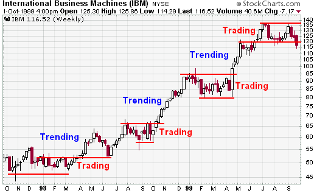

Introduction Of Technical Analysis
Technical analysis can never predict exactly what will happen. Actually technical analysis is based directly on human psychology. The main purpose of the technical analysis is to find out in which cases the investors repeat their mistakes.
Technical analysis takes into account past price movements. Because our aim is to anticipate investors' preferences in those price movements.According to the technical analysis, investors' reactions to price changes in the past will be similar to price changes that are occurring now.
So briefly, past experiences are used to determine future price changes.
Meaning Of Technical Analysis
Only price movements are important in technical analysis. It only focused on the supply and demand of stocks. Price movements are a result of changes in supply and demand. The purpose of the technical analysis is to find out where the change tends to proceed.
For the technical analyst, there is no value as to why the price has fallen or why it has risen. If the price rises, the demand (buyers) is higher than the supply (sellers). Same way If the price goes down, the supply (sellers) is higher than demands (buyers).

Fundamental analysis and Technical analysis
The Fundamental analysis is an art of valorization. The economic and sectoral activities of the companies are evaluated and the real values of the stocks are tried to be determined. If the market price of the stock is lower than the price being assessed, the purchase is made. If the market price of the stock is higher than the price being assessed, the sale is made.
The technical analysis analyzes the past price movements and tries to determine the future trend of the price. For a technical analyst, there is no value of the financial status of the firm or what the firm is doing.